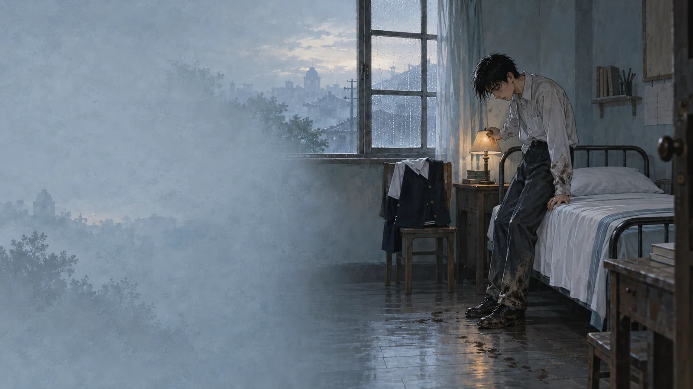

閱讀入口一個清晨，
一個清晨，
一年的記憶。
小說從楊雲峰雨夜後回家寫起，再讓他回看十六歲以來的家庭、學校與人際經驗，最後回到清晨。第一人稱讓讀者貼近他的恐懼與自我辯解，但敘述者的理解不等於作者的判斷。
「好多事情我得慢慢拼湊才想得起來。」

氛圍插畫；年代與地景不作考證，閱讀判斷以原文為準。
場景地圖
城市是他的心理地圖
點擊場景，讀取原文線索。插畫支援氣氛理解，不代替文本細節。
五個閱讀關卡
從情節走向詮釋
每類 10 題。答錯會指出誤讀方向，可立即重答；答對後解鎖文本證據與分析。
3–4 分鐘口語準備證據不是終點，
證據不是終點，
觀點才是。
回答：作者如何透過第一人稱敘事、環境描寫與人物自白，表現楊雲峰的孤獨與身分焦慮？草稿會自動保存在本機。